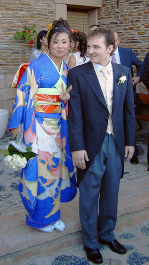

Victor José Agustín Martín & Emi Sato
Victor José Agustín Martín & Emi Sato  Victor José Agustín Martín & Emi Sato
Victor José Agustín Martín & Emi Sato 
This page is within a frameset. View the entire genealogy report of family Victor José Agustín Martín & Emi Sato, or surname index or report summary.
HTML generator.
© 2006 GenoPro Inc. All Rights Reserved.